PyEvoc extends the Hierarchical Evocation Method to large-scale digital corpora — reconstructing the central nucleus and peripheral structure of social representations from naturally occurring online discourse.
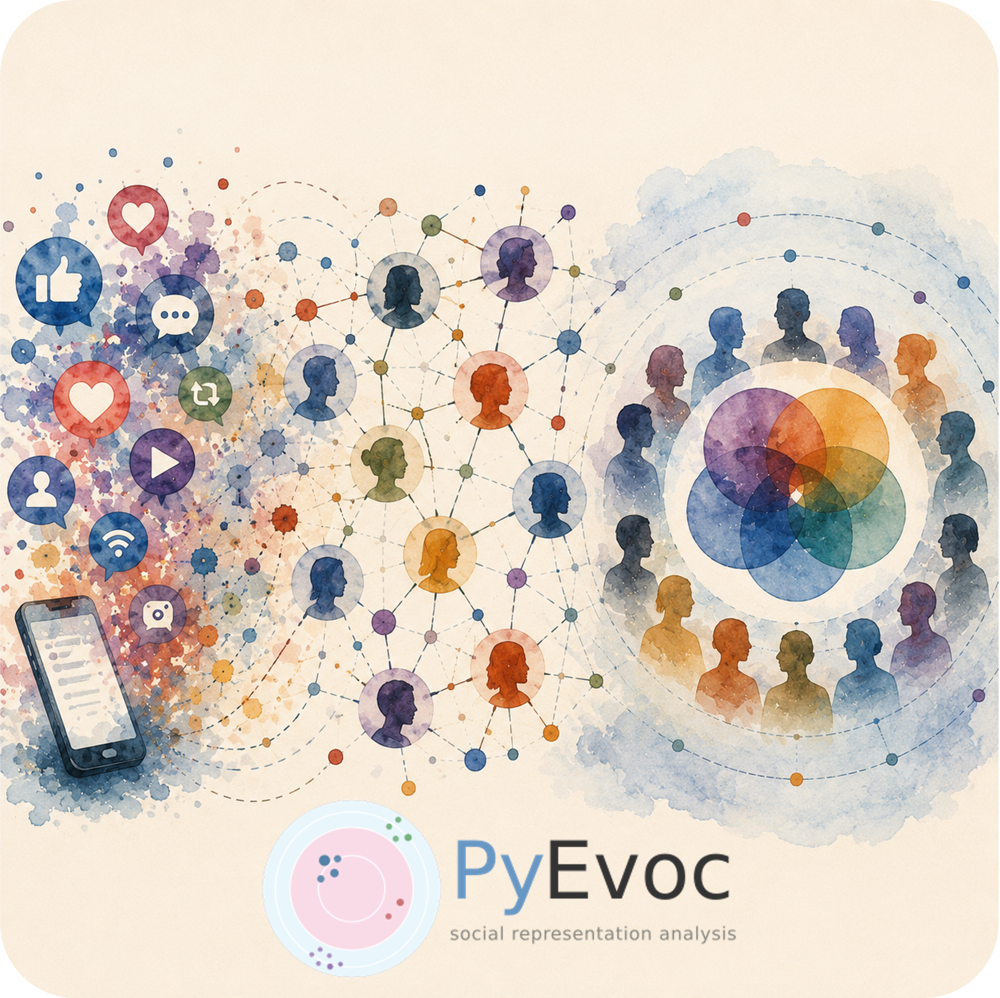
From raw social media data to publication-ready EVOC maps — every stage is modular, resumable, and parameterised.
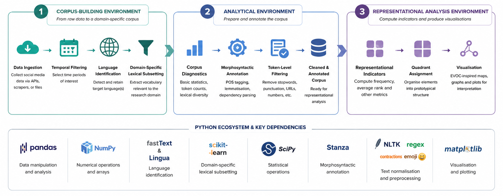
PyEvoc requires Python 3.9+ and installs directly from GitHub. Bundled models load automatically at runtime — no separate download steps needed for most use-cases.
A pandas.DataFrame with at least four columns:
| Column | Type | Description |
|---|---|---|
| user_id | str / int | Author or account identifier |
| doc_id | str / int | Document or post identifier |
| time | datetime | Publication timestamp |
| text | str | Raw text content |
All additional source columns are preserved throughout the pipeline via DatasetConfig.
Each step exposes a dedicated config object for fine-grained control. Intermediate outputs can be saved and reloaded to resume long annotation runs.
Map source columns to the four standard names (user_id, doc_id, time, text) via DatasetConfig. Supports CSV, XLSX, TSV, Parquet, JSON. Date filtering and timezone normalisation applied here.
fastText (lid.176.bin) primary classification; Lingua secondary validator for ambiguous cases (default confidence window: 0.50–0.90). Supports English, Italian, French, German, Spanish, Portuguese.
Provide a plain-text anchor file (one term per line). First stage: regex matching with word-boundary constraints. Second stage: cosine-similarity expansion on a sparse count matrix. Optional — skip if corpus is already domain-specific.
pyevoc.preprocessing.thematic_filteringDescriptive summary: document count, token count, unique types, type/token ratio, hapax legomena rate, temporal distribution, and user/document metadata.
pyevoc.preprocessing.corpus_statisticsProduces a clean_text column. Options: lowercase, URL removal/placeholder, contraction expansion, emoji spacing, elongated vowel reduction, punctuation spacing. Progress bar available.
Stanza-based token-level annotation: UPOS tags, lemmas, dependency relations, sentence and token position. GPU support; batch size configurable. Saves Parquet for resumability.
pyevoc.preprocessing.annotationIdentifies Unicode emoji tokens and reassigns them to the EMOJI UPOS class, enabling their treatment as a distinct lexical category with separate AFE/AOE thresholds.
Computes four binary salience indicators per token: I_first (opening sentence), I_emph (emphasis), I_list (list/quote), I_intens (caps/typographic). Weights configurable via ForegroundingWeights.
Filters token table to NOUN, ADJ, and EMOJI. Applies minimum document (min_docs_per_term) and user (min_users_per_term) frequency thresholds to exclude noise terms.
Produces per-term statistics: user diffusion, composite salience rank, absolute and relative frequency. Returns POS-specific AFE/AOE thresholds and a quadrant summary table. Configurable via SalienceConfig (α, R_max, diffusion mode).
Adds concreteness labels to term_stats using the bundled English norms lexicon. Reports coverage statistics. Useful for interpreting the objectification dimension of representational structures.
Adds human-readable descriptions to emoji terms using the bundled lookup table. Falls back to standard Unicode names with fuzzy matching (configurable min_similarity) for unknown symbols.
Assigns each term to one of four zones using POS-specific AFE/AOE thresholds. Generates an HTML report (generate_html=True) with the top-N terms per quadrant per POS class.
Dependency-based bigram extraction, G² significance testing, minimum frequency/document/user thresholds. Optional NER with overlap resolution (prefer_overlap="evidence"). HTML output available.
Segments corpus into periods (equal-interval or custom cuts with labels). Re-runs EVOC per period. Returns Core Jaccard similarity, Diffusion Spearman correlation, stability indices, and per-period quadrant assignments.
pyevoc.analysis.temporal_stabilityFour plot types: EVOC target maps (NOUN/ADJ scatter), collocation semantic trees (arc diagrams coloured by quadrant), emoji EVOC map, and temporal Sankey flow diagram. Static PNG + interactive HTML via Plotly.
pyevoc.visualisationAll outputs below were generated using the publicly available AGI dataset (Xie & He, 2025 — 53,649 posts on Artificial General Intelligence). Click any figure to enlarge.
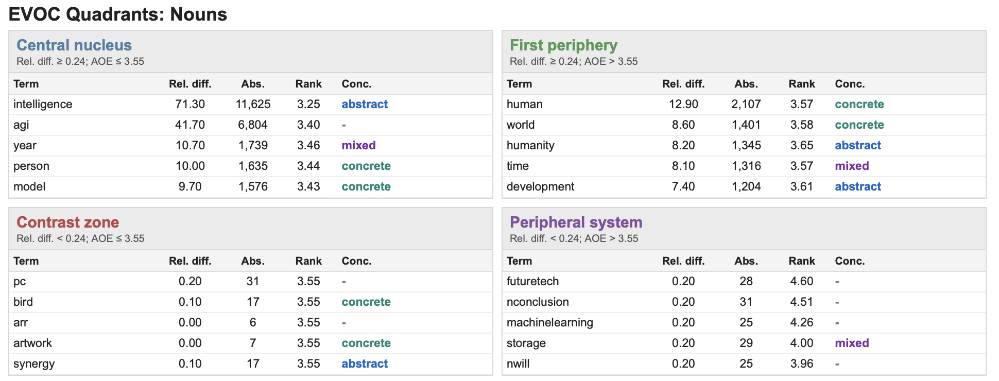
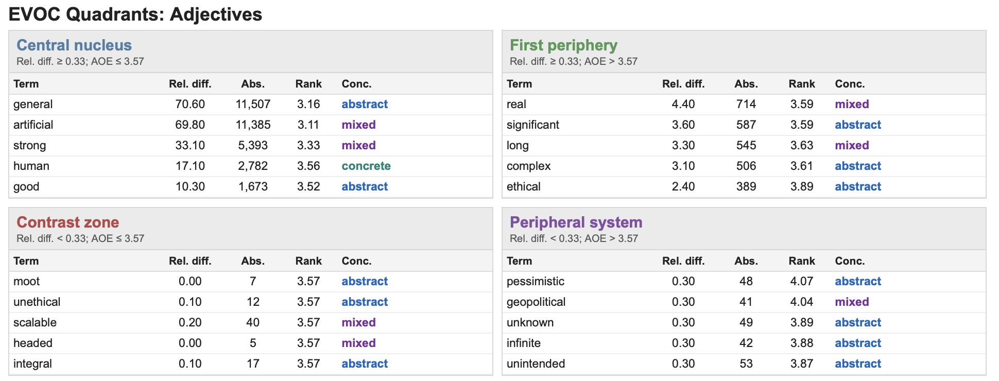
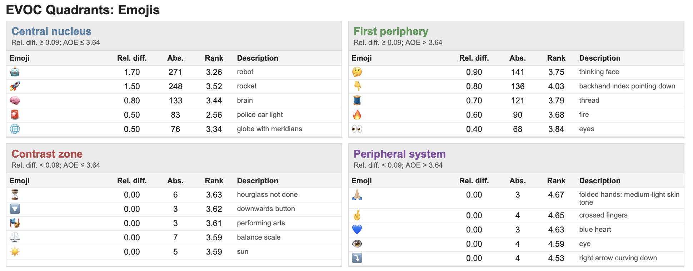
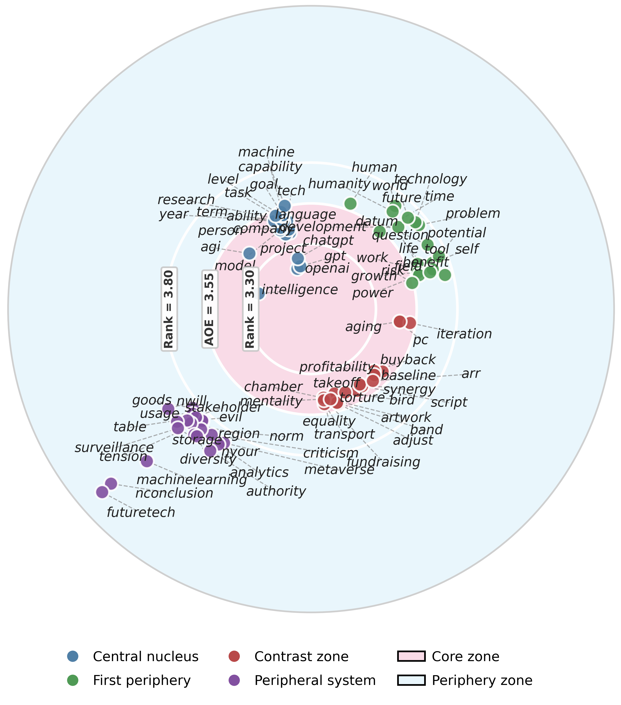
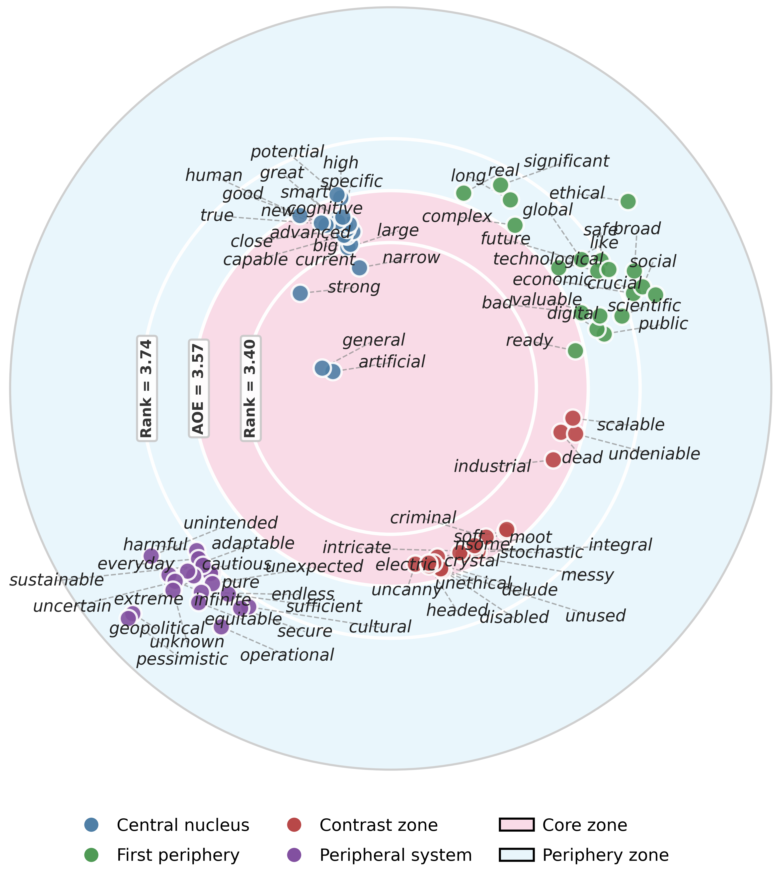
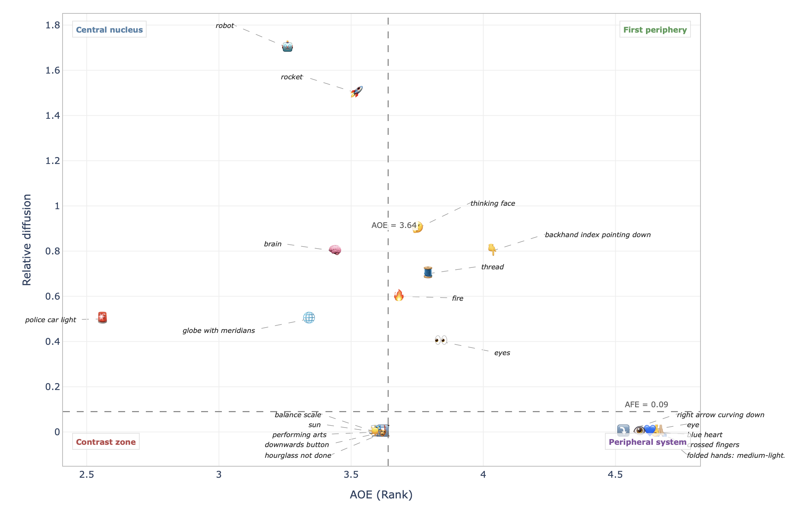
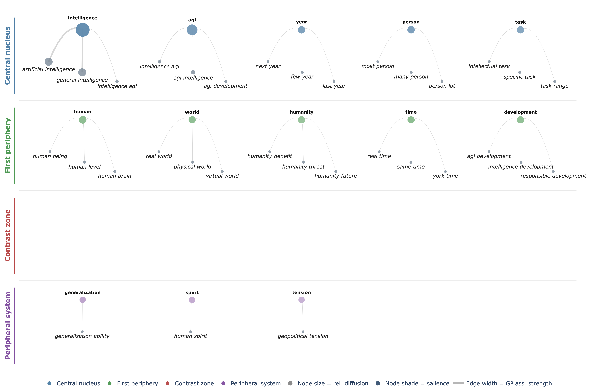
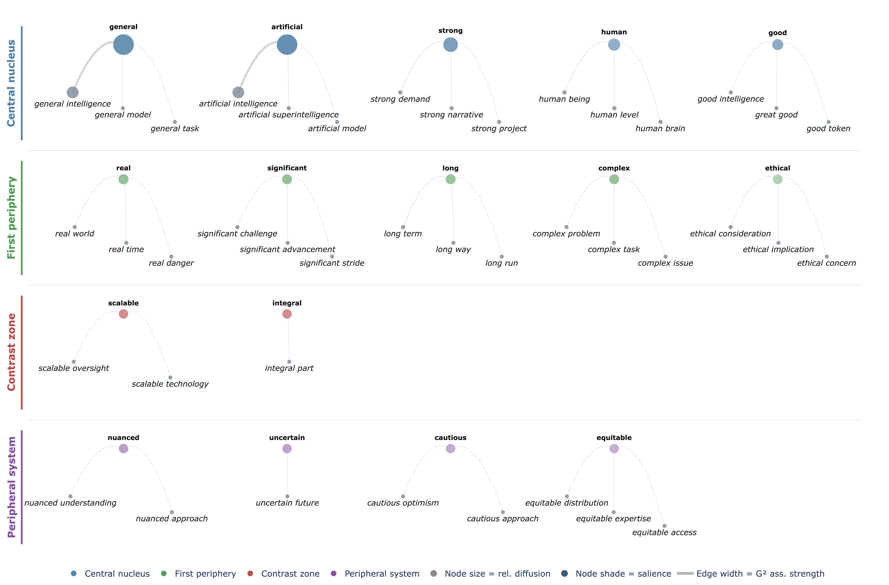
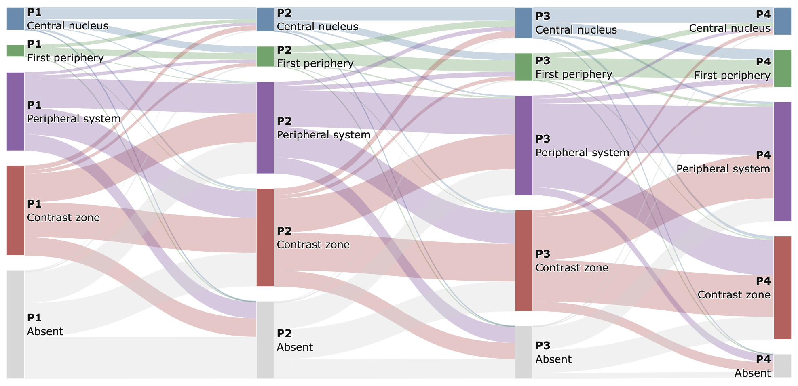
PyEvoc was developed alongside and applied in a peer-reviewed study to appear.